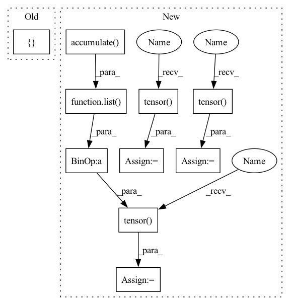

Pattern ID :21797

Before Change
text_lens = torch.tensor(input_zipped[1], dtype=torch.int)
target = torch.tensor(pad_to_max(batch_zipped[2], pad_value=-1), dtype=torch.long)
batch = {
"id": ids,
"input": [texts, text_lens],
"target": target
}
return batch
@staticmethod
After Change
)
batched_char_words_len = torch.tensor(list(itertools.chain.from_iterable(input_zipped[1])), dtype=torch.int)
nbs_accumulated = list(itertools.accumulate([1] + list(input_zipped[3])))
indices = [list(range(nbs_accumulated[i], nbs_accumulated[i + 1])) for i in range(len(nbs_accumulated) - 1)]
batched_char_word_index = torch.tensor(pad_to_max(indices), dtype=torch.long)
batched_tokens = torch.tensor(pad_to_max(input_zipped[2]), dtype=torch.long)
batched_tokens_len = torch.tensor(input_zipped[3], dtype=torch.int)
target = torch.tensor(pad_to_max(batch_zipped[2], pad_value=-1), dtype=torch.long)
return {
In pattern: SUPERPATTERN
Frequency: 3
Non-data size: 10
Instances
Fragment ID: 69447010
Project Name: nlpaueb/greek-bert
Commit Name: 77a770a62c3e0b388614c042af3fedc2ca55026b
Time: 2020-05-17
Author: jkoutsikakis@gmail.com
File Name: examples/ud/rnn/dataset.py
M Class Name: UDRNNDataset
N Class Name: UDRNNDataset
M Method Name: collate_fn(1)
N Method Name: collate_fn(1)
M Parent Class: Dataset
N Parent Class: Dataset
M File Name: examples/ud/rnn/dataset.py
N File Name: examples/ud/rnn/dataset.py
M Start Line: 57
M End Line: 69
N Start Line: 69
N End Line: 99
'>
Before Change
batch = {
"id": ids,
"input": [texts, text_lens],
"target": target
}
After Change
)
batched_char_words_len = torch.tensor(list(itertools.chain.from_iterable(input_zipped[1])), dtype=torch.int)
nbs_accumulated = list(itertools.accumulate([1] + list(input_zipped[3])))
indices = [list(range(nbs_accumulated[i], nbs_accumulated[i + 1])) for i in range(len(nbs_accumulated) - 1)]
batched_char_word_index = torch.tensor(pad_to_max(indices), dtype=torch.long)
batched_tokens = torch.tensor(pad_to_max(input_zipped[2]), dtype=torch.long)
batched_tokens_len = torch.tensor(input_zipped[3], dtype=torch.int)
target = torch.tensor(pad_to_max(batch_zipped[2], pad_value=-1), dtype=torch.long)
return {
'>
Fragment ID: 69447042
Project Name: nlpaueb/greek-bert
Commit Name: 77a770a62c3e0b388614c042af3fedc2ca55026b
Time: 2020-05-17
Author: jkoutsikakis@gmail.com
File Name: examples/ud/rnn/dataset.py
M Class Name: UDRNNDataset
N Class Name: UDRNNDataset
M Method Name: collate_fn(1)
N Method Name: collate_fn(1)
M Parent Class: Dataset
N Parent Class: Dataset
M File Name: examples/ud/rnn/dataset.py
N File Name: examples/ud/rnn/dataset.py
M Start Line: 57
M End Line: 69
N Start Line: 69
N End Line: 99
'>
Before Change
itertools.accumulate(batch_size_per_feature)
)
recat_per_feature = recat
recat = []
for r in recat_per_feature:
recat.extend(
list(
range(
After Change
)
permuted_batch_size_per_feature = [batch_size_per_feature[r] for r in recat]
input_offset = [0] + list(itertools.accumulate(batch_size_per_feature))
output_offset = [0] + list(
itertools.accumulate(permuted_batch_size_per_feature)
)
recat_tensor = torch.tensor(
recat,
device=device,
dtype=torch.int32,
)
input_offset_tensor = torch.tensor(
input_offset,
device=device,
dtype=torch.int32,
)
output_offset_tensor = torch.tensor(
output_offset,
device=device,
dtype=torch.int32,
)
recat = torch.ops.fbgemm.expand_into_jagged_permute(
recat_tensor,
input_offset_tensor,
output_offset_tensor,
'>
Fragment ID: 69446951
Project Name: facebookresearch/torchrec
Commit Name: 860d5740f4a0f3c39b09457e6e3f83c71d3589d6
Time: 2022-03-30
Author: leongao@fb.com
File Name: torchrec/distributed/dist_data.py
M Class Name: AnonimousClass
N Class Name: AnonimousClass
M Method Name: _get_recat(5)
N Method Name: _get_recat(4)
M Parent Class:
N Parent Class:
M File Name: torchrec/distributed/dist_data.py
N File Name: torchrec/distributed/dist_data.py
M Start Line: 67
M End Line: 101
N Start Line: 44
N End Line: 120